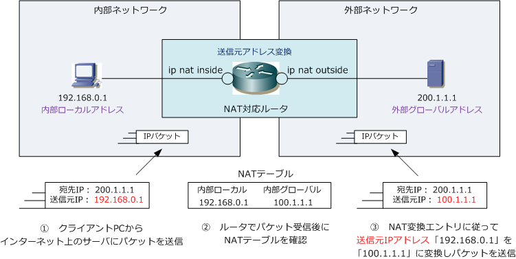
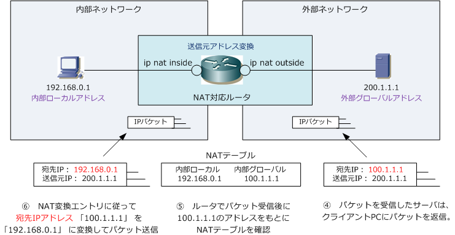
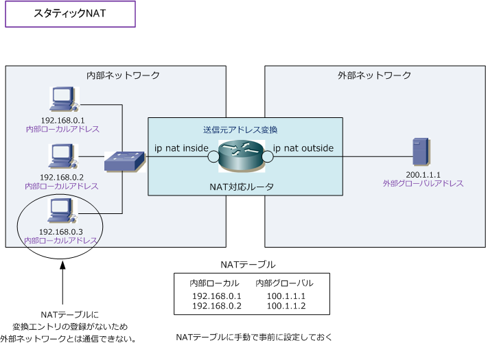
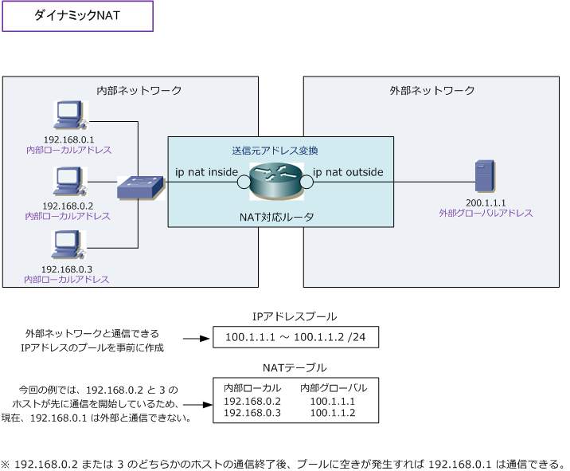

Static NAT / Dynamic NAT
NATの仕組み
ここでは送信元アドレス変換を行うNATの仕組みを紹介します。下図は内部ネットワークのクライアント PCからインターネット上のサーバへパケットを送信している様子です。①から③の順で処理していきます。

次にサーバからの戻りのパケットです。送信元アドレス変換を行うNATルータがパケットを送信して その戻りのパケットがNATルータに着信すると、NATルータはNAT変換したアドレスを元に戻します。 戻りのパケットは送信元アドレス変換でなくて、もとに戻すために宛先アドレス変換を行います。

スタティックNATとダイナミックNAT
NATは、1対1のIPアドレス変換の技術ですが、その1対1の変換方法には、大きく2つの種類があります。 1つはスタティックNATです。スタティックNATは、システム管理者があらかじめNATルータに1対1の 変換エントリを設定しておくNAT。「内部ローカルアドレスと内部グローバルアドレス」を1対1で定義。 例えば「192.168.0.1」は「100.1.1.1」に変換、「192.168.0.2」は「100.1.1.2」に変換と事前設定。

もう1つはダイナミックNATです。ダイナミックNATでは、NAT変換で使用するIPアドレスのプールを 設定しておくことで、外部への通信が発生した時にそのプール内のIPアドレスを1つ使用してNAT変換。 ダイナミックNATではプール内の小さい値のIPアドレスから順に割り当てていきます。1つのルータで ダイナミックNATとスタティックNATの両方が設定されている場合は、スタティックNATの設定が優先。

実際にクライアントPCからインターネット通信をする場合、スタティックNATやダイナミックNATを利用 するのではなくて、以下で紹介するPATという技術を使用してインターネット通信を行うのが極めて一般的。